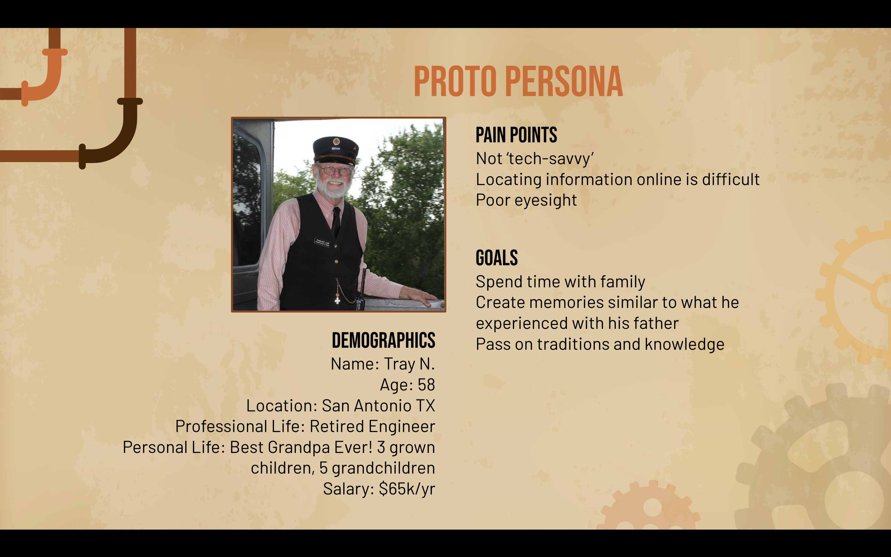
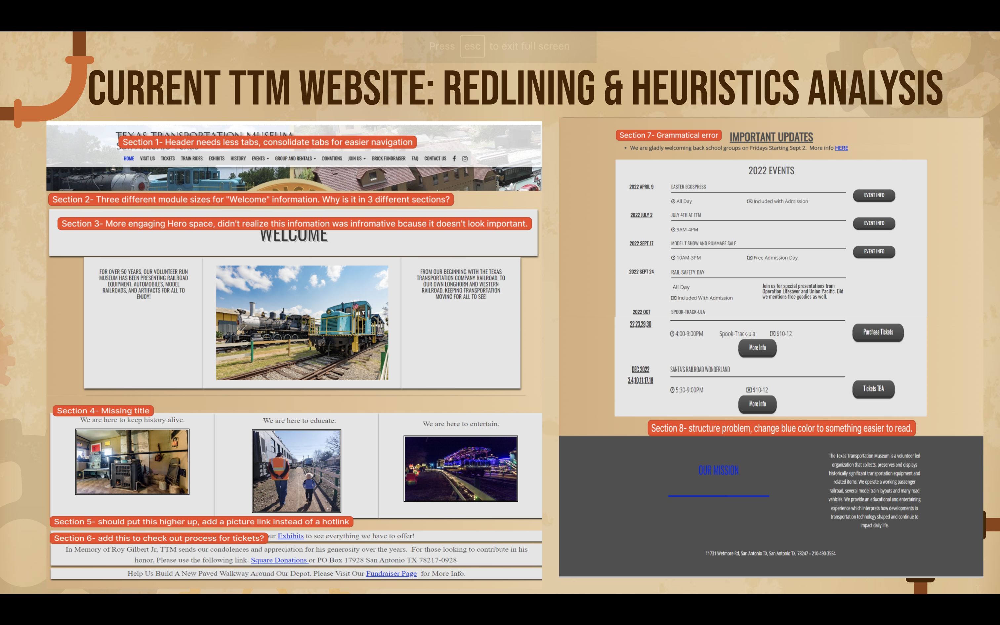
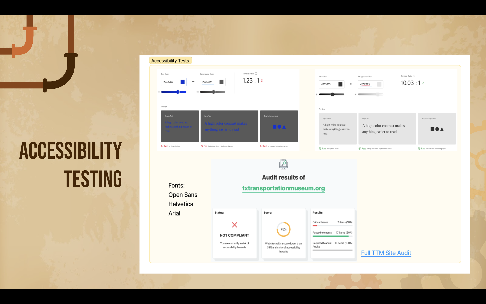

Proto-Persona
When developing our original proto persona, we thought about Tray, here. He is a 58-year-old retired engineer from San Antonio, TX. He is a father of 3 grown children and has a combine total of 5 grandchildren. He wants to spend quality time with his family and grandkids and be able to share his love and knowledge of trains with his grandchildren. However, he is not very tech savvy, has poor eyesight and finding out information on the Texas Transportation Museum website would not be something he would be able to handle lightly.
Persona
Also based on the testing and feedback of our stakeholder and users, we were able to refine our persona to better represent the target audience of the museum. Our persona is a grandparent, above the age of 50, who has a degree and an interest in education or engineering. They want to spend time making memories with their family and pass on traditions or knowledge associated with history. This person is generally not tech-savvy, preferring to spend their time with hands-on activities and interactions.

Redlining Heuristics
With Tray’s pain points in mind, we look at the redlining we did for the Texas Transportation Museum homepage. As you can see, there are too many tabs for Tray to look at in the header. There are 3 different sections for “Welcome Information”. There are areas in the homepage that we did not realize was informative because the page is not set up to make things look important. It is missing titles, there are also grammatical errors as well as color and background clashes. As demonstrated the blue does not stand out well with the dark gray, thus making it especially hard for Tray to read with his poor eyesight.
Accessibility
To further emphasize Tray’s pain points, an accessibility test was done on the Texas Transportation Museum homepage website, and as pointed out, the website is not compliant and is at risk of accessibility lawsuits.
